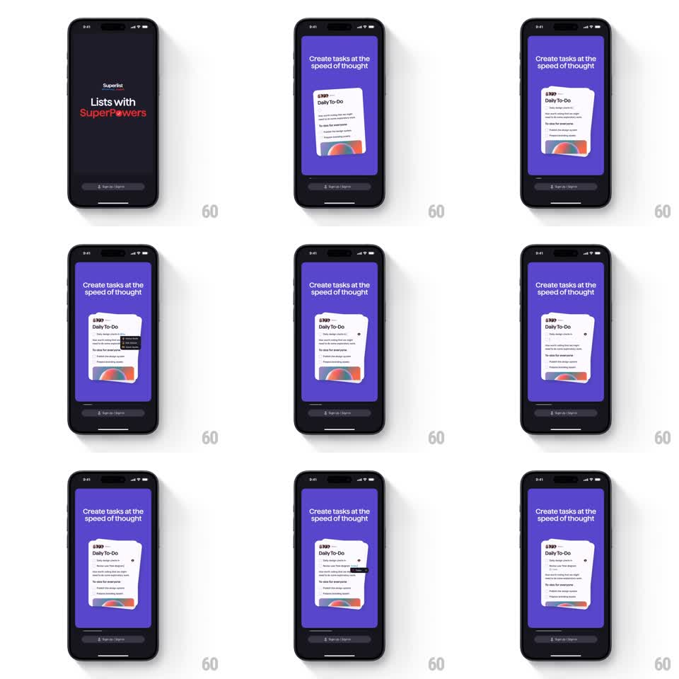

Media
Frame-by-frame

Rebuild this animation 1:1: Superlist's create-task onboarding - a Daily To-Do card auto-types a new task and parses its due date and assignee into inline chips as the text lands.

Rebuild this animation 1:1: Superlist's create-task onboarding - a Daily To-Do card auto-types a new task and parses its due date and assignee into inline chips as the text lands.
## Integration
Integration: stack-agnostic spec - springs given as stiffness/damping, timed motions as duration + curve; map every value to your framework and animation library of choice.
## Scene
Purple panel, headline "Create tasks at the speed of thought". Center: a white "Daily To-Do" card listing existing tasks, with a photo strip at its bottom. As the demo runs, a new task row types into the card and inline metadata appears: a date chip ("Due tomorrow") and a small circular assignee avatar attach to the row.
## Motion spec
Pattern: auto-typing task entry with inline chip parsing.
- A new empty row slides open at the top of the list (height spring ~320/28) with a blinking cursor.
- The task text types character by character (~40ms/char, natural pauses).
- As the date phrase completes, it detaches into a chip: the words "Due tomorrow" shrink into a dark pill that docks under the row (scale 1 -> 0.9 with a 200ms fade-slide), and the plain-text version leaves the sentence.
- The assignee handle parses the same way: an avatar chip pops in beside the date chip (scale 0 -> 1, spring ~400/18).
- The card grows to fit (height spring ~300/28); existing rows shift down smoothly.
## Calibration
- The parse moment is the payoff: text -> chip should feel like the app understood, with a tiny magnetic snap.
- Chips align left under the task text, 4pt apart.
## Reduced motion
Task appears fully formed with its chips (250ms fade).
## Don't miss
- The card's photo strip and existing tasks stay static - only the new row animates.
- The cursor blinks at 530ms intervals and disappears once chips dock.